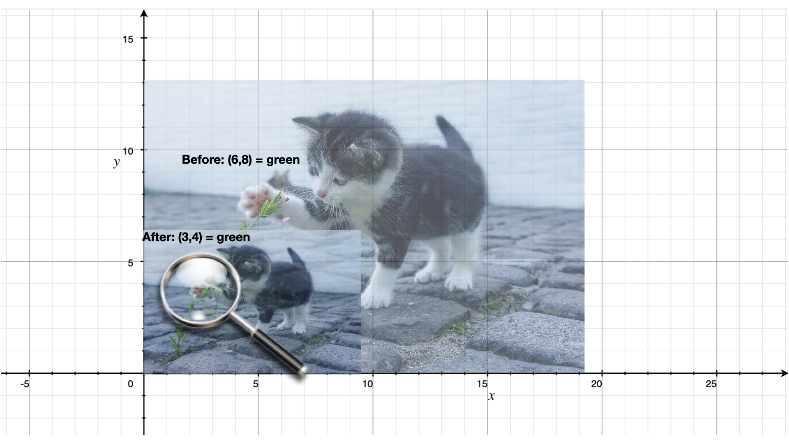

Modelling a domain - Images¶
In this section, we work through the process of how to use programming to try and understand a domain better, by working our way ground up. It requires some fluency with the “interrogation” approach we worked through in earlier sections and also with the notion of “procedures as abstractions” which was dealt with when we worked on parsing strings. The parsing topic itself was a soft intro to this approach, but here we’ll go a little deeper.
The content of this chapter is based on an old research paper published by Conal Elliot called Pan which described a way to think about constructing images through programs.
Images¶
We use the word “image” as distinct from a “picture” for the purpose of this section, though there is not a very significant difference between the two. We include the possibility of photographs being an “image” where as we take a picture as mostly something that is “drawn” using some mechanism. Again, this is not a distinction worth emphasizing, but it is just to clarify the language used here.
Let’s say we have an image in computer memory – apple. We presume it
represents some visual thing that looks like an apple. Either a drawing of
an apple or a photograph of one.
The basic thing we can expect to do with an image is to show it. We’ll call
this render-image, since “display”, “show” and such have other meanings
given to them by Racket. So (render-image apple) should give us something
we can see. We might similarly image another word render-image-to-file
which will produce a PNG or JPG file containing the depiction that we can view
using any external tool – (render-image-to-png-file apple "apple.png").
We might ask many questions of such a rendered image – What is its width and height? Which portion (rectangle) of the image has been rendered?. It would seem that these should be intrinsic properties of an image, but we can also think of a fractal “Mandelbrot set” as an image that has a conceptually infinite amount of detail in it, so it would be necessary to make the dimensions and portion specific in order to get a concrete rendering of it.
So ideally, our rendering procedures will be something like –
(render-image apple <width> <height> <x0> <y0> <x1> <y1>)
(render-image-to-file "apple.png" apple <width> <height> <x0> <y0> <x1> <y1>)
where the \((x_0,y_0,x_1,y_1)\) define a rectangle by giving the top-left coordinate \((x_0,y_0)\) and the bottom right coordinate \((x_1,y_1)\).
Need for a representation¶
When we’re looking at modelling an idea like an “image” that we don’t yet fully understand [1] to actually start doing things with images, we need to pick a “representation” that we can use in our program. The term “representation” refers to determining which of available mechanisms can be used to model the thing we’re looking at so as to enable us to work with it in ways that we expect to.
Picking a representation therefore implies that we know the ways in which we want to work with it. Note that there are dimensions of representations that we may not be concerned with initially as we work towards understanding a domain, but might wish to get to later. These include efficiency of operations, interoperability with some other software, optimal memory usage and so on. Before we get to that, we need to understand images by first clarifying what we want to do with them.
Doing things with images¶
You’re given an image bound to the identifier apple. What can you do with it?
Maybe you want to overlay two apple images to make a “bunch of apples”. Let’s write it as
(overlay apple apple). This phrase isn’t precise just yet, because in our minds as we think of overlaying an apple image on another, we might think of an apple “near” another apple and not exactly on top of it, which would hide it. But “how close?” then becomes another question we need to answer through our expression. Since a relative position shift can be given by a pair of numbers \((\d x,\d y)\), maybe we can write our expression as(overlay dx dy apple apple). This still isn’t very clear as we don’t quite know which of the two apples the \((\d x,\d y)\) applies to. We can pick a convention, which would be one solution. However we can also take this opportunity to note that “an image shifted by dx,dy is also an image” to simplify theoverlayconcept. Now, maybe we can write our intention as(overlay apple (shift dx dy apple)). This pattern is now accessible to us for other purposes too – ex:(overlay apple (shift dx dy orange)),(overlay apple (overlay (shift dx1 dy1 orange) (shift dx2 dy2 pear))), and so on.Insight
When we define a word whose argument types and result types are the same (“image” in this case), we immediately gain a very large number of ways to combine the values. If the operation only has one argument, then the only thing we can do is to apply the operation multiple times. However if we have more than one such operation, or more than one argument of the same type, the possibilities explode even more. We see this with
shiftandoverlay.Maybe we want to make an image bigger or smaller – i.e. “scale” it. We can express this idea using \((s_x,s_y)\) scaling factors like this
(scale sx sy apple). Now we can put apples of various sizes near each other in a cluster by combiningoverlay,shiftandscale.Task
Write some expressions of a “fruit scene” using the given images bound to identifiers
apple,bananaandorange, using the operatorsoverlay,shiftandscale.
Understanding what we’ve asked for¶
Now, we still can’t make any images because we don’t know what an image is yet? i.e. We haven’t selected a representation for it yet and therefore we cannot construct a single image. However, we’re close and we need to pay some attention to what we’ve asked for in the section above.
The shift and scale words imply some kind of an “X/Y axis coordinate system”
for our images. (shift 2 1 apple) might be expected to shift the apple
twice as much to the right as (shift 1 1 apple). Depending on how we choose
our y axis, say we pick it to be pointing vertically upwards, (shift 1 2 apple)
would shift it twice as much upwards as (shift 1 1 apple).

Fig. 9 Scaling a picture of a cat by half using (scale 0.5 0.5 cat).¶
But what does “shifting” or “scaling” mean? With reference to the picture above, we might say “whatever is happening at a given coordinate \((x,y)\) is now happening at a different coordinate \((x+\d x,y+\d y)\) for an image shifted by \((\d dx, \d y)\) and similarly for a scaled image, whatever was “happening” at \((x,y)\) is now “happening” at \((x \times s_x, y \times s_y)\).
The key idea here is that something is “happening” at a given coordinate \((x,y)\). For visual image, the only thing we can tell that’s special about a given point is the colour at the given point. So, we can now think of an “image” as a mapping from a given coordinate \((x,y)\) to a colour which is often graded in computer systems as a mixture of three “primary” colours red, green and blue – \((red,green,blue)\).
Another word for “mapping” is “function” and programming languages let you describe mappings by giving general ways by which to compute the target value given the source value of the mapping, instead of, say, listing every possible combination and checking the input against such a table.
(struct colour (red green blue))
(define (red-circle radius)
(define (colour x y)
(if (< (+ (* x x) (* y y)) (* radius radius))
(colour 1.0 0.0 0.0)
(colour 0.0 0.0 0.0)))
colour)
Or using the “lambda” approach,
(define (red-circle radius)
(lambda (x y)
(if (< (+ (* x x) (* y y)) (* radius radius))
(colour 1.0 0.0 0.0)
(colour 0.0 0.0 0.0))))
**Alternative ways of writing ``red-circle``**
There are many ways to write the same red-circle definition. You should
always choose the way that for you expresses the idea in the clearest
manner. Concerns like optimization of calculations come only after clarity.
; While the same, it doesn't let us think of "red-circle"
; in the abstract and forces us to consider how it deals with
; coordinates right in its definitional form.
(define ((red-circle radius) x y)
(if (< (+ (* x x) (* y y)) (* radius radius))
(colour 1.0 0.0 0.0)
(colour 0.0 0.0 0.0)))
; This one uses the fact that the two paths don't choose
; different values for green and blue components of the colours
; and uses the (if..) to only pick the red value. While this is
; correct, it doesn't generalize well and we'll need to change
; the *form* of the definition if we decide for some reason that
; the inside of the circle should be orange and outside should be
; teal. However, this form is useful if we want to vary the colour
; for different values of the distance from the origin (0,0).
(define (red-circle radius)
(lambda (x y)
(colour (if (< (+ (* x x) (* y y)) (* radius radius)) 1.0 0.0)
0.0
0.0)))
So you see that in writing programs, we don’t just care about being correct about what the program means, we also care about how the meaning is expressed – i.e. the form – because we can derive new meanings by manipulating the form.
We now have a “representation” for an image as a map from \((x,y)\)
coordinates to an RGB colour. This means the other words we wanted,
such as overlay, shift and scale will have to work with
this same representation.
Expressing shift¶
With (shift dx dy img), we described it as “whatever used to happen
at \((x,y)`\) in the img now happens at \((x+\d x, y+\d y)\).
We can capture this relationship in a definition like given below. You
should try to define it yourself first before revealing the solution.
**Defining shift**
(define (shift dx dy img)
(lambda (x y)
(img (- x dx) (- y dy))))
Expressing scale¶
This is very similar to shift and if you’ve done that, you should
definitely give this definition a go. Remember that (scale sx sy img) is an
image where “whatever was happening at \((x,y)\) in the image now happens
at \((x \times s_x, y \times s_y)\)”.
**Defining scale**
(define (scale sx sy img)
(lambda (x y)
(img (/ x sx) (/ y sy))))
Expressing overlay¶
We need a precise notion of what (overlay apple banana) means. One possible meaning
is that the banana should appear right on top of the apple wherever its colours
are valid and the apple should show through wherever the banana gives no colours.
In our representation (colour r g b), which is the only value produced by
an image that maps \((x,y)\) to colour, we do not have a way to tell whether a
particular colour returned is part of the banana or not.
A common way to include this information in a colour is the ARGB representation
where we use a fourth number – the so called “alpha channel” – which takes
values in the range \([0.0,1.0]\) – and expresses how “opaque” the colour
is. So we now change our colour definition to include such an “alpha channel”
in order for overlay to be possible. Given such an “alpha” value, we can
use simple linear colour mixing to determine the resultant colour at each point
in the final image. For the moment, let’s consider “alpha” to be either
\(0.0\) or \(1.0\) for ease of thinking about colour mixing without
knowing too much colour theory.
(struct colour (alpha red green blue))
(define (overlay behind-img front-img)
(lambda (x y)
(let ([c1 (behind-img x y)]
[c2 (front-img x y)])
(if (> (colour-alpha c2) 0.5) c2 c1))))
Exercises: Other ways to combine images¶
Now that you have shift, scale and overlay in your vocabulary,
define the following shapes and ways to combine images. (Assume ARGB colour
for these).
Define a
(box width height colour)which should give you a box whose bottom-left corner is at \((0,0)\) and it has a given width and height and its interior is of the given colour.Question: What colour should its exterior be?
Define a
(disc radius colour)which should be a circle of the given radius filled with the given colour inside. Again, what should be the colour outside?Define a
(rotate angle-degrees img)which would be a rotated version of the given image. So(rotate 90.0 (box 1.0 10.0 black))should effectively give you a box with width \(10.0\) and height \(1.0\) whose right bottom corner is at the origin. You’ll need some high school trigonometry to work this out.Using all the elements and operator words you’ve defined so far, make a picture of a “cricket pitch”.